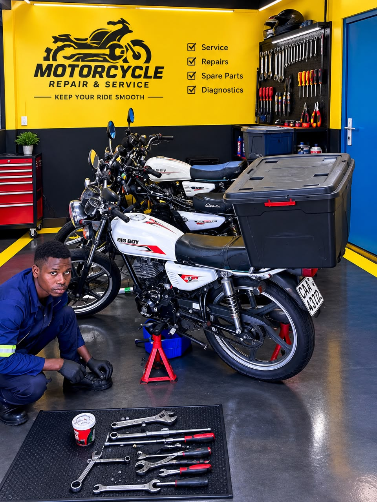
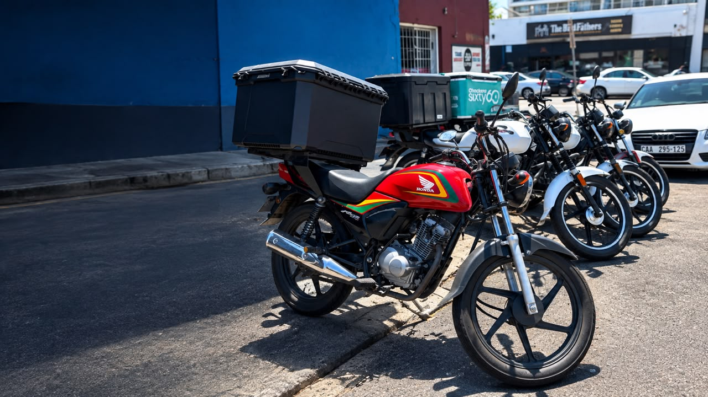

Motorcycle Servicing
Regular servicing helps identify problems early and keeps your engine, fluids and components working as they should.
Reliable motorcycle repairs, servicing and support for riders who depend on their bikes every day.
Book a ServiceConselho Moto Repairs is a growing motorcycle repair and servicing workshop focused on keeping riders safe, mobile and confident on the road.
We work with a small team of dedicated mechanics who understand that a motorcycle is more than just a machine. For many riders, especially delivery and commuter riders, their bike is how they get to work, earn an income and get through their day.
That's why we focus on practical repairs, proper servicing and honest advice rather than simply replacing parts without understanding the problem.

From routine maintenance to unexpected breakdowns, we help keep your motorcycle reliable and road-ready.
Regular servicing helps identify problems early and keeps your engine, fluids and components working as they should.
From brakes and clutch systems to suspension, engine and fuel-related problems, we work to find the cause and get your bike running properly.
When your motorcycle lets you down on the road, we provide assistance where possible to help get you moving again.
We help riders stay ahead of expensive problems with maintenance advice and checks based on the condition and use of their motorcycle.

We know that being without your motorcycle can affect your entire day. That's why our goal is to provide straightforward service and get your bike back on the road as efficiently as possible.
Every motorcycle has a story. Our job is to understand what's wrong and help you make the right decision.
We look at the symptoms and inspect the motorcycle to understand what may be causing the problem.
We narrow down the problem and explain what needs attention before carrying out the repair.
Our mechanics carry out the required work with attention to the motorcycle's condition and use.
Once the work is complete, the goal is simple: get you safely back on the road.
We service a range of motorcycles, with particular experience working with commuter and delivery bikes that spend long hours on the road.
Conselho Moto Repairs is growing, and we're proud to build that growth one customer and one motorcycle at a time.
As we continue to grow, our goal remains the same: provide dependable motorcycle service, build lasting relationships with riders and become a workshop that customers can rely on whenever their bike needs attention.
Whether you need a routine service, a repair or help figuring out what's wrong with your motorcycle, we're here to help.
Whether your bike needs a service, repair or a closer look, get in touch with Conselho Moto Repairs.